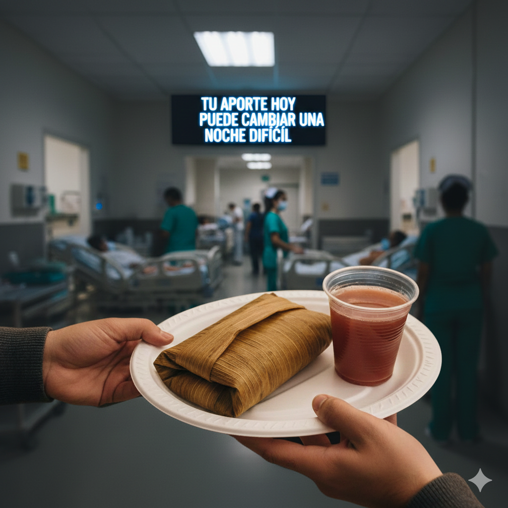
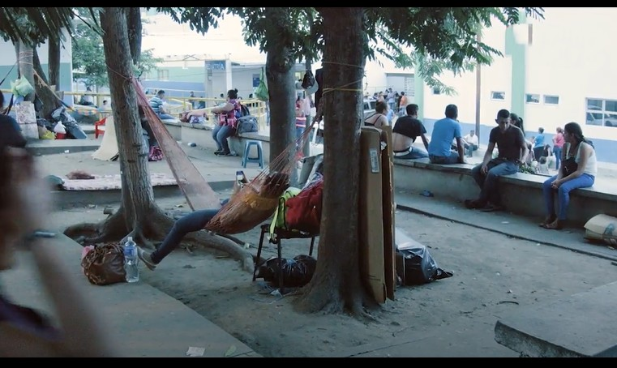

Familias pasan la Nochebuena en hospitales públicos sin acceso a alimentación. Juntos podemos cambiar eso.
Cada diciembre, cientos de personas permanecen largas horas en hospitales públicos acompañando a sus familiares, sin recursos para alimentarse dignamente.
La espera también tiene hambre.

No es caridad. Es compartir lo que somos.
Comida tradicional preparada con respeto y sentido humano.
Un gesto sencillo que reconforta en una noche difícil.
Porque estar presente también alimenta.
Cada gesto sigue un camino claro y transparente.
Contribuyes según tus posibilidades para hacer posible la jornada.
Organizamos y cocinamos alimentos tradicionales con dignidad.
Llegamos a hospitales públicos de Tegucigalpa.
Personas alimentadas
Hospitales visitados